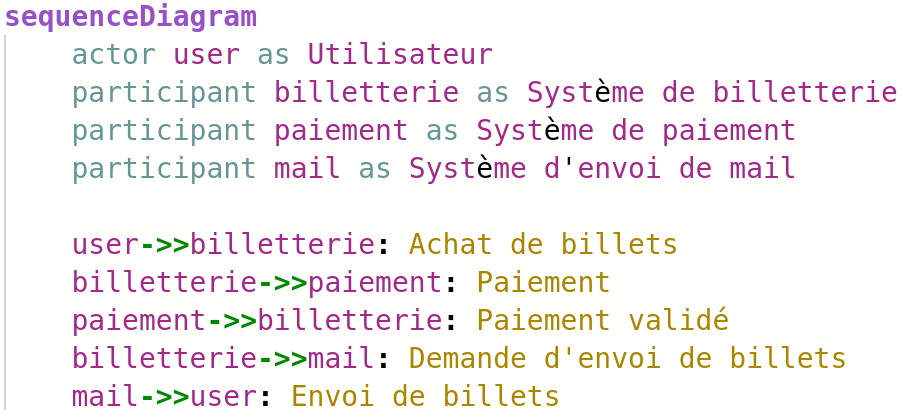

La doc va bien, ne t’en fais pas
Gernot Starke et Peter Hruschka
Contenu - que faut-il documenter ?
Motivation - pourquoi documenter ?
Représentation - comment documenter ?
Damien Lucas
Tech Lead
Architecte

@dlucasd

Billetterie des Jeux Olympiques 2024
1. Introduction et Objectifs
Objectifs et contexte du projet.
Grandes fonctionnalités
Grandes fonctionnalités
Acheter des places pour les JO
Grandes fonctionnalités
Acheter des places pour les JO
Télécharger les billets achetés
Liens vers la documentation existante
Liens vers la documentation existante
Maquettes de l’application
Liens vers la documentation existante
Maquettes de l’application
Spécifications fonctionnelles
Liens vers la documentation existante
Maquettes de l’application
Spécifications fonctionnelles
Documentation de référence de l’API REST


OpenAPI Generator


OpenAPI Generator
OpenAPI Generator
Pas de contrat d’interface ?
Pas d’API REST ?
2. Contraintes d’architecture
Contraintes techniques et organisationnelles.
Conventions.
Contraintes et conventions
Contraintes et conventions
L’application doit être compatible Firefox, Edge et Chrome.
Contraintes et conventions
L’application doit être compatible Firefox, Edge et Chrome.
L’application doit être déployée sur un serveur Tomcat.
Contraintes et conventions
L’application doit être compatible Firefox, Edge et Chrome.
L’application doit être déployée sur un serveur Tomcat.
Conventions de code, nommage, commit.
3. Contexte et périmètre
Contexte et périmètre du système.
Interfaces externes.
Visio
draw.io
C4 model - Créé par Simon Brown

4. Stratégie de solution
Décisions fondamentales façonnant l’architecture du système.
| Objectif | Scénario | Solution | Détail |
|---|---|---|---|
Performance | Fort trafic sur le site | File d’attente à l’achat | Lien vers l’étude |
5. Vue en boîtes
Décomposition du système en boîtes avec plusieurs niveaux d’abstraction.
Structurizr - Créé par Simon Brown
workspace ... {
model { ... }
views { ... }
}workspace ... {
model {
client = person "Client" ...
systemeBilletterie = softwaresystem ... {
webApp = container ...
apiRest = container ...
}
}
views { ... }
}workspace ... {
model {
client = person "Client" ...
systemeBilletterie = softwaresystem ... {
webApp = container ...
apiRest = container ... {
userController = component ...
userService = component ...
}
}
}
views { ... }
}workspace ... {
model {
client = person "Client" ...
systemeBilletterie = softwaresystem ...
client -> systemeBilletterie "Utilise" ...
}
views { ... }
}workspace ... {
model { ... }
views {
systemcontext systemeBilletterie "SystemContext" {
include *
}
container systemeBilletterie "Containers" {
include *
}
}
}Démo !
Vincent Ogloblinsky
Vue.js ? React ? Autre ?
6. Vue exécution
Comportement concret des briques du système à travers des scénarios.
Diagrammes :
d’activités
de flux
de séquence
…

7. Vue déploiement
Description de l’infrastructure technique.
Correspondance avec les briques logicielles.
Kubernetes ? k8sviz, KubeView
Docker Compose ? docker-compose-diagram, docker-compose-viz
8. Concepts transversaux
Principales directives transverses à l’application.
Packaging, Déploiement
Pattern d’architecture
Règles d’utilisation de dépendances
Observabilité
Modèle de données
9. Décisions d’architecture
Décisions architecturales significatives.
Statut
Proposé, accepté, rejeté, obsolète …
Statut
Proposé, accepté, rejeté, obsolète …
Contexte
Problème constaté qui motive la décision ou le changement.
Statut
Proposé, accepté, rejeté, obsolète …
Contexte
Problème constaté qui motive la décision ou le changement.
Décision
Changement proposé et/ou effectué.
Statut
Proposé, accepté, rejeté, obsolète …
Contexte
Problème constaté qui motive la décision ou le changement.
Décision
Changement proposé et/ou effectué.
Conséquences
Qu’est-ce qui devient plus facile ou plus difficile à faire en raison de ce changement ?
10. Critères de qualité
Critères de qualité et cas d’utilisation permettant de les évaluer.

Performance
Gestion d’au moins 10 000 transactions simultanées lors de la vente de billets tout en répondant aux utilisateurs en moins d’une seconde.
11. Risques et Dettes techniques
Risques identifiés ou dette technique.
Risques
Risques
Dépendance à des services tiers avec risque de panne.
Risques
Dépendance à des services tiers avec risque de panne.
Mise à l’échelle insuffisante pour gérer le trafic.
Dette technique
Dette technique
Absence de tests automatisés pour le processus d’achat.
Dette technique
Absence de tests automatisés pour le processus d’achat.
Duplication de code dans le service d’envoi de mails.
12. Glossaire
Termes techniques et métier importants.
Glossaire
Glossaire
Billet : Donnant entrée, accès quelque part.
API de paiement : Interface permettant la gestion de transactions financières.
Récapitulatif
Introduction
Contraintes
Contexte
Solution
Vue boîtes
Vue exécution
Vue déploiement
Concepts
ADR
Qualité
Dette technique
Glossaire
Introduction
Contraintes
Contexte
Solution
Vue boîtes
Vue exécution
Vue déploiement
Concepts
ADR
Qualité
Dette technique
Glossaire
Documentation utilisateur ?
Diátaxis
Conclusion
Merci
@dlucasd